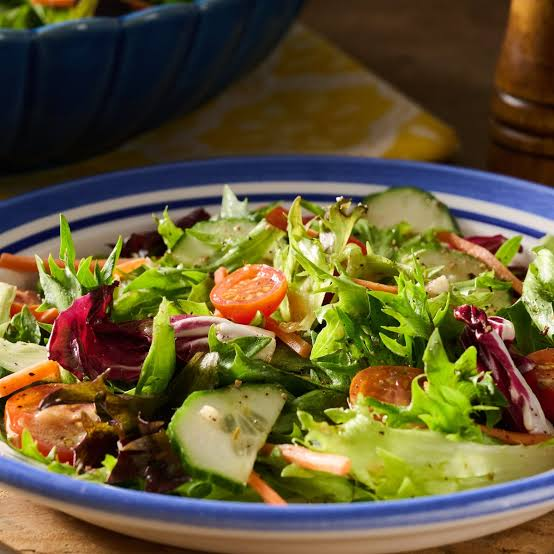

Salad Recipe

A fresh and healthy salad made with a variety of vegetables and a light dressing.
Perfect as a side dish or a light meal!
Ingredients:
- 2 cups mixed salad greens
- 1 cup cherry tomatoes, halved
- 1/2 cucumber, sliced
- 1/4 red onion, thinly sliced
- 1/4 cup feta cheese, crumbled
- 2 tablespoons olive oil
- 1 tablespoon balsamic vinegar
- Salt and pepper to taste
Instructions:
- In a large salad bowl, combine the mixed salad greens, cherry tomatoes, cucumber, and red onion.
- In a small bowl, whisk together the olive oil, balsamic vinegar, salt, and pepper to make the dressing.
- Pour the dressing over the salad and toss to combine.
- Sprinkle the crumbled feta cheese on top of the salad.
- Serve immediately and enjoy!
Back to Home